Eight chapters · 65 minute read16 historical series · 18 targetsDigital edition v012 · 5 November 2026
Chapter 01
A plan for a country
A railway, a harbor, a river: the pieces of a national economy imagined before they could be built.
In April 1921, Sun Yat-sen signed the preface to a book about the material future of China. Its subject was the work of joining a country together: railways across the interior, roads between settlements, harbors open to ocean trade, rivers made safer and more useful, and factories capable of supplying the construction.
The International Development of China, published in the Putnam edition in 1922, reads at once as an engineering program and a proposal to investors. Sun envisaged a large new market linked to world industry. The capacity assembled for the First World War could, in his argument, be redirected toward peaceful construction. China would gain infrastructure; foreign industry would gain work and customers.[17]
“100,000 miles of Railways.” “1,000,000 miles of Macadam Roads.”
Sun Yat-sen, The International Development of China, p. 6
Those two quantities are unusually convenient for a later scorekeeper. They can be put beside observed mileage and followed through time. Other ambitions resist that treatment. Sun proposed three great ocean ports with future capacity comparable to New York Harbor. He supplied capital budgets for steel and cement works rather than annual output targets. His reforestation proposal supplied a purpose without supplying a national percentage.
This book follows the plan into the record of what was subsequently built. Its central device is a ledger: a proposal on one side, a later physical achievement on the other. The comparison separates a useful resemblance from a demonstrated chain of influence. A dam resembling an earlier proposal does not, by itself, establish that its builders followed that proposal. A country may encounter the same geography and reach a similar engineering answer.
From the original book The Great Northern Port, Map I, 1922 Putnam edition. Public-domain scan, Project Gutenberg. Historical place names and boundaries are retained.
Three kinds of target
A figure printed in the source is a textual target. A quantity reconstructed from a capital sum or a historical comparator is inferred. A number supplied by the analyst where Sun gave none is imputed. This distinction runs through the book because a modern calculation can easily make an editorial assumption look like an instruction from 1921.
Each indicator follows the same questions: What did Sun propose? How can we express it as a working number? What did China achieve? The answer distinguishes his own quantities from the estimates needed to compare them with later construction.
The result is a history of a proposal meeting a century of construction—and an examination of what it means to call a proposal fulfilled. Scale, location, timing, financing and consequences each deserve their own line in the account.
The evidence reveals branching paths. Sun's proposals became reference points for Republican institutions and later commemorations. Projects also inherited older routes, changed sites, acquired new designs and encountered financial resistance. The following chapters trace those mechanisms, rather than treating the final landscape as its own explanation.
Chapter 02
Lines across the continent
The railway target is clear. The road target exposes the difficulty of counting.
Sun wanted a national transport network that would connect the interior to ports, factories and markets. For railways and roads, he gave unusually clear numbers: 100,000 miles of railway and one million miles of macadam roads.[17]
Railways: 100,000 miles
Sun proposed 100,000 miles of railway. At 1.609344 kilometers to the mile, that means a national network of about 161,000 kilometers. The comparison counts the length of routes open to traffic; a double-track railway does not count twice.
China passed that length in 2024, when its operating railway network reached 162,000 kilometers. By the end of 2025 it had reached 165,000 kilometers, or about 102,500 miles—roughly 2.5 percent above Sun's target. High-speed railway accounted for 50,000 kilometers of the 2025 total. The national mileage target has been met. That establishes the scale of the network; it does not mean every line followed Sun's proposed route.[37][43]
Figure 01
Railway in operation
miles, national network · log scale
All linesHigh-speed
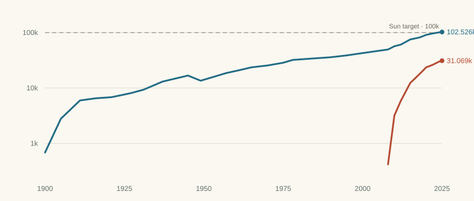
Sun’s 100,000-mile target was reached in 2024. High-speed lines are included within the national operating total.Underlying observations
Year
All lines
High-speed
1900 ≈
684
—
1905 ≈
2,796
—
1911 ≈
5,965
—
1916 ≈
6,524
—
1921 ≈
6,835
—
1927 ≈
8,078
—
1931 ≈
9,321
—
1937 ≈
1.305e+04
—
1945 ≈
1.678e+04
—
1949
1.355e+04
—
1952
1.522e+04
—
1957
1.858e+04
—
1962
2.15e+04
—
1965
2.361e+04
—
1970
2.548e+04
—
1975
2.858e+04
—
1978
3.212e+04
—
1985
3.43e+04
—
1990
3.592e+04
—
1995
3.877e+04
—
2000
4.269e+04
—
2005
4.685e+04
—
2008
4.952e+04
418
2010
5.667e+04
3,189
2012
6.065e+04
5,814
2015
7.519e+04
1.233e+04
2018
8.184e+04
1.802e+04
2020
9.091e+04
2.355e+04
2022
9.631e+04
2.61e+04
2024
1.007e+05
2.983e+04
2025
1.025e+05
3.107e+04
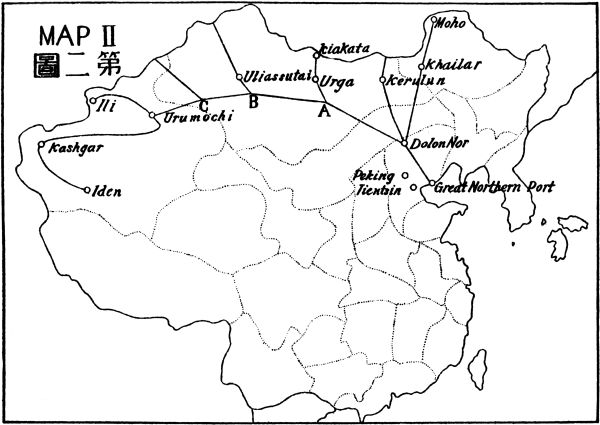
From the original book Northwestern railway proposals, Map II, 1922 Putnam edition. Public-domain scan, Project Gutenberg. Historical place names are retained.
How the routes took shape
Sun had described three trunk corridors in a Shanghai interview on 25 June 1912. His railway vision preceded the book, and some routes had still older origins. Chengdu–Chongqing grew out of the late-Qing Sichuan–Hankou scheme; Republican authorities established a preparatory office in 1932. PRC construction began in June 1950 and the line opened in July 1952. Its history crosses governments, with planning and preparation preceding the final construction.[16][3][10]
Historians have also identified overlap between Nationalist railway projections and lines completed in the 1950s. The often-cited eighty-percent figure concerns correspondence with early-1940s plans, as reported by Richard Louis Edmonds through Victor D. Lippit's work. It does not establish that Sun personally originated eighty percent of the later railway network.[29][31]
Roads: one million miles, with a surface requirement
Sun proposed one million miles of macadam roads: roads built with compacted layers of broken stone. Converted to metric units, his target was about 1.61 million kilometers. A total for all roads answers the question of network size, but the surface specification also matters.[17]
By 2024 China reported 5.49 million kilometers of roads, about 3.41 million miles—more than three times the proposed length. The official road census already recorded 1.68 million kilometers at the end of 2000, above the numerical target. China has exceeded the length Sun envisaged; the evidence here does not establish when a million miles met his specified surface standard.[37][35]
Figure 02
Road network
miles · log scale
Highways, pre-2005 countAll roads incl. village, 2005 countExpressways
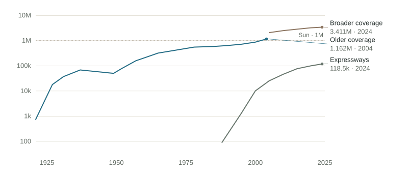
The modern road network is much longer than Sun’s proposed million miles. Changing coverage and his macadam surface requirement prevent a precise completion date.Underlying observations
Year
Highways, pre-2005 count
All roads incl. village, 2005 count
Expressways
1921 ≈
746
—
—
1927 ≈
1.802e+04
—
—
1931 ≈
3.728e+04
—
—
1937 ≈
6.835e+04
—
—
1949
5.014e+04
—
—
1952
7.873e+04
—
—
1957
1.582e+05
—
—
1965
3.197e+05
—
—
1978
5.531e+05
—
—
1985
5.856e+05
—
—
1988
—
—
91
1990
6.39e+05
—
—
1995
7.189e+05
—
1,330
2000
8.716e+05
—
1.013e+04
2004
1.162e+06
—
—
2005
—
2.079e+06
2.548e+04
2010
—
2.491e+06
4.604e+04
2015
—
2.844e+06
7.674e+04
2020
—
3.23e+06
1e+05
2024
—
3.411e+06
1.185e+05
Road statistics changed as the network expanded. Village roads entered the revised national coverage for 2005, and the older chart places the million-mile crossing later than the official 2000 census does. These differences prevent a reliable single completion year. They do not alter the conclusion that today's network is much larger.[34][38]
Chapter 03
Three doors to the world
Northern, eastern and southern ports would connect the continental program to ocean commerce.
Sun proposed three great ocean gateways: one in the north, one in the east and one in the south. Each was to grow toward the scale of New York Harbor, with railways and inland waterways feeding its trade. He named a comparator rather than an annual cargo target.[17]
The northern port: a New York-scale gateway
Sun placed his Great Northern Port between the Qinghe and Luanhe, on the Bohai coast. A new city would grow around it, and rising land values would help pay for construction. His ambition was a major ocean harbor serving northern China, with New York as its model.[17]
To give that comparison a number, we use a rough estimate of New York's annual port traffic around 1921: 45 million tonnes. Tangshan and Tianjin together provide a measure of today's northern gateway. This compares a regional group of ports with the scale of Sun's proposed harbor; it does not treat them as one port.
In 2024 Tangshan and Tianjin together handled about 1.4 billion tonnes, roughly thirty-two times the historical benchmark. Northern China's port capacity has far exceeded the scale Sun envisaged. The modern ports' locations, designs and construction histories differ from the single new harbor he described.[36]
Figure 03
Bohai Gulf ports, cargo
million tonnes a year · log scale
Tangshan (Jingtang + Caofeidian)Tianjin
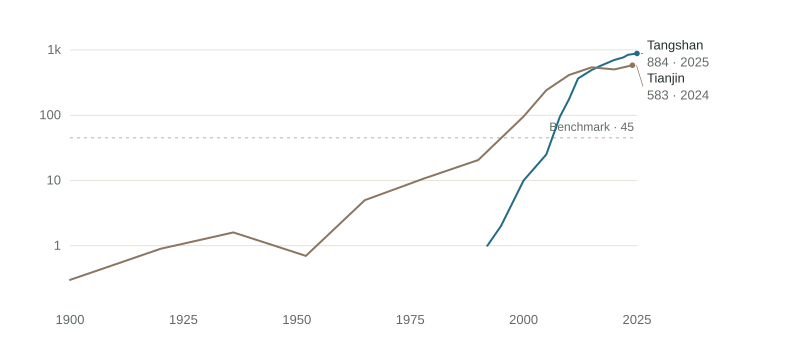
Tangshan and Tianjin handle far more cargo than the approximate 45-million-tonne New York comparison. Together they measure a port region, rather than one new harbor.Underlying observations
Year
Tangshan (Jingtang + Caofeidian)
Tianjin
1900 ≈
—
0.3
1920 ≈
—
0.9
1936 ≈
—
1.6
1952
—
0.7
1965
—
5
1978
—
10.7
1990
—
20.6
1992
1
—
1995
2
—
2000
10
95.7
2005
25
241
2008
95
—
2010
175
413
2012
365
—
2015
493
541
2017
573
—
2019
657
—
2020
702
503
2022
769
—
2023
842
—
2024
862
583
2025
884
—
From a Republican proposal to modern ports
The North China Conservancy Commission revived Sun's Northern Port proposal in 1928, including funding and survey preparations. Work halted in 1932. Modern Jingtang came through a later planning cycle: preparation in 1984, construction in 1989 and domestic traffic in July 1992. Beijing and Tangshan agreed joint investment and operation in 1994. The sequence shows both an early attempt to act on Sun's proposal and a much later project with its own institutions and financing.[27][19][6]
Caofeidian's ore terminal opened on 16 December 2005 after another period of advocacy, assessment and approval. A participating political party's account describes that process and claims a role in it. No demonstrated transfer of Sun-era engineering drawings into the modern port designs follows from these histories.[2]
The eastern port: the scale arrived at different sites
Sun's Great Eastern Port was an enclosed mainland harbor between Chapu and Kanpu, again intended to rival New York. Shanghai's later Yangshan port instead occupies offshore islands linked to land by the Donghai Bridge. Its first phase opened on 10 December 2005.[17][13][14]
Modern eastern ports specialize in containers, so the working comparison converts the 45-million-tonne New York estimate into 4.5 million TEU, assuming ten tonnes per TEU. A TEU is one twenty-foot container equivalent. Sun gave no container target: this is an approximate way of expressing his port ambition in a modern unit.
Shanghai and Ningbo-Zhoushan together handled about 90.8 million TEU in 2024, around twenty times that benchmark. Their combined traffic exceeded it by the late 1990s in the historical estimates. The eastern gateway's commercial scale has been achieved many times over, at sites and with designs different from Sun's specified harbor.
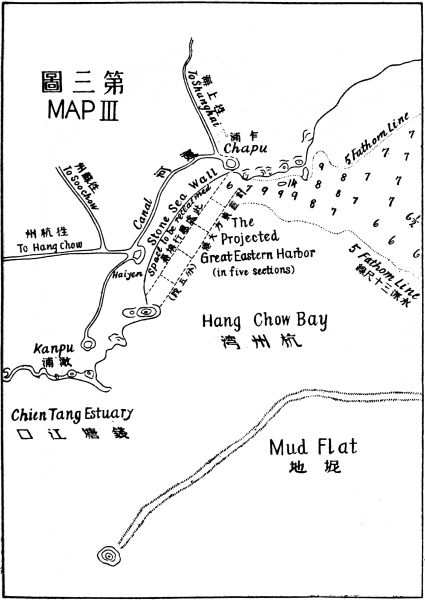
The specified site Sun's mainland Chapu–Kanpu enclosure differs from Yangshan's later offshore-island layout. Public-domain scan, 1922 Putnam edition.[17]
Figure 04
Yangtze delta container ports
million TEU a year · log scale
ShanghaiNingbo-Zhoushan
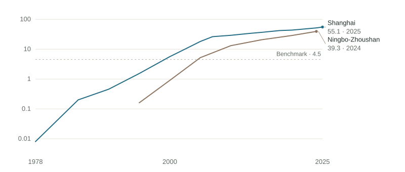
Shanghai and Ningbo-Zhoushan greatly exceed the 4.5-million-TEU working benchmark. Sun’s specified harbor was at a different mainland site.Underlying observations
Year
Shanghai
Ningbo-Zhoushan
1978
0.008
—
1985
0.2
—
1990
0.456
—
1995
1.53
0.16
2000
5.61
0.9
2003
11.3
—
2005
18.1
5.2
2007
26.2
—
2010
29.1
13.1
2013
33.6
—
2015
36.5
20.6
2018
42
—
2020
43.5
28.7
2022
47.3
—
2024
51.5
39.3
2025
55.06
—
The southern port: a great Pearl River outlet
Sun wanted a Great Southern Port serving Canton and its hinterland. As with the northern and eastern gateways, New York supplied the model for its future scale.[17]
We use the same 4.5-million-TEU working benchmark, derived from historical New York tonnage rather than from a number in Sun's text. Shenzhen and Guangzhou together measure the mainland Pearl River gateway; Hong Kong is shown alongside them for context.
Shenzhen and Guangzhou handled about 59 million TEU in 2024, roughly thirteen times the benchmark. Their combined traffic passed it around 2000 in the historical estimates. Southern China's ocean-trade capacity has greatly exceeded the proposed scale. This is the achievement of a port region, rather than the construction of one harbor exactly as proposed.[36]
Figure 05
Pearl River container ports
million TEU a year · log scale
Hong KongShenzhenGuangzhou
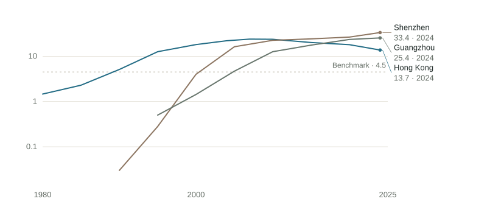
Shenzhen and Guangzhou greatly exceed the working benchmark. Hong Kong is shown separately for context.Underlying observations
Year
Hong Kong
Shenzhen
Guangzhou
1980
1.46
—
—
1985
2.29
—
—
1990
5.1
0.03
—
1995
12.6
0.28
0.5
2000
18.1
3.99
1.43
2004
22
—
—
2005
—
16.2
4.68
2007
23.9
—
—
2010
23.7
22.5
12.6
2015
20.1
24.2
17.6
2020
18
26.5
23.5
2024
13.7
33.4
25.4
A port city: Philadelphia within forty years
Sun expected the new northern port to support a new city. He argued that it could reach Philadelphia's size within forty years and invoked New York as a larger urban comparison. In the 1920 census those cities had about 1.82 million and 5.62 million residents respectively. These are the two population benchmarks.[17]
The available comparison follows Tianjin municipality, whose population reached about 13.9 million in 2020. It was already above the Philadelphia benchmark in the 1953 observation and above the New York benchmark in 1964. But Tianjin's boundaries expanded in 1958, and it is an existing municipality rather than Sun's proposed new port city.
The region supports cities larger than Sun's examples; the population figures do not prove his forty-year promise for a particular new city was fulfilled. Comparing a whole municipality with an American city also exaggerates the precision of the match.[47]
Figure 06
Port-city population
millions, municipality at census · log scale
ShanghaiTianjinGuangzhou
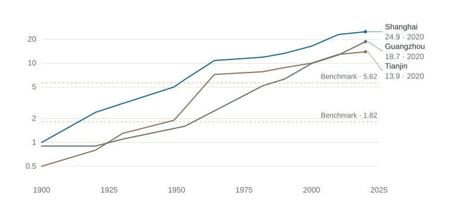
Tianjin is larger than the 1920 Philadelphia and New York comparisons. Its changing municipal area does not measure Sun’s proposed new port city.Underlying observations
Year
Shanghai
Tianjin
Guangzhou
1900 ≈
1
0.5
0.9
1920 ≈
2.4
0.8
0.9
1930 ≈
3.1
1.3
1.1
1949
5
1.9
1.5
1953
6.2
2.7
1.6
1964
10.8
7.2
2.5
1982
11.9
7.8
5.2
1990
13.3
8.8
6.3
2000
16.4
10
9.9
2010
23
12.9
12.7
2020
24.9
13.9
18.7
Chapter 04
Rivers and the industrial base
Making a waterway useful required locks, channels, power, steel and cement.
Sun joined river engineering to industrial development. Better navigation would move goods inland; dams could generate electricity; steel and cement works would supply construction. His proposals mix explicit quantities, financial budgets and ambitions that have no numerical target.
Hydropower: thirty million horsepower
Sun proposed dams and locks on the upper Yangtze in his development plan. In a later lecture, on 17 August 1924, he cited potential of more than thirty million horsepower between Yichang and Wanxian. That figure described a stretch of river, rather than the output of one specified dam.[17][18]
One horsepower is about 0.746 kilowatts. Thirty million horsepower therefore becomes approximately 22.4 gigawatts. That gives a working measure of the power scale he discussed. Comparing it with the national network shows China's overall progress; comparing it with Three Gorges shows the scale of the later project on the same river.
China's national hydropower capacity passed 22.4 gigawatts in the early 1980s and reached about 436 gigawatts in 2024, including pumped storage. Three Gorges alone reached 22.5 gigawatts when its final major generating unit entered service in July 2012. China has far exceeded the power scale Sun discussed. Three Gorges is comparable in size to that regional estimate, but his words were not a precise specification for the modern dam.[42][5]
Figure 07
Hydropower installed
gigawatts · log scale
China
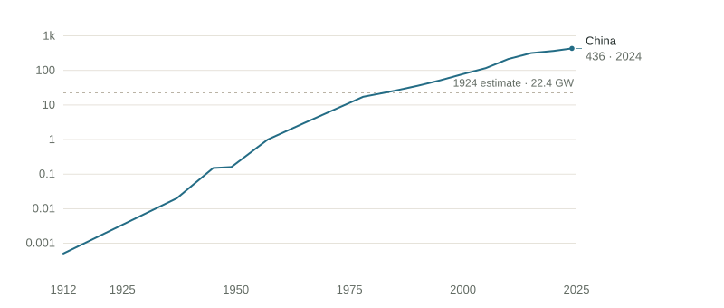
National hydropower exceeds the 22.4 GW conversion of Sun’s 1924 regional estimate. The estimate was not a specification for a single dam.Underlying observations
Year
China
1912 ≈
0.0005
1937 ≈
0.02
1945 ≈
0.15
1949
0.16
1957
1
1965
3
1978
17.3
1985
26
1990
36
1995
52
2000
79
2005
117
2010
216
2015
320
2020
370
2024
436
How Three Gorges became a project
In December 1944, economic affairs minister Wong Wen-hao reported American engineer John Lucian Savage's Chinese site visits and sought help with detailed Yangtze design. In January 1945, Ambassador Patrick Hurley transmitted T. V. Soong's request for Bureau of Reclamation involvement. Technical cooperation was being negotiated, but construction finance was not secured: in July 1945 Washington said it saw no prospect of near-term funding.[23][11][8]
Engineers provided some continuity across political change. Tsinghua's biography credits Zhang Guangdou with wartime planning and preservation of technical files in 1948–49, followed by teaching and advisory work under the PRC. Ying Jia Tan's history traces the engineers and their American contacts. The eventual dam nevertheless followed renewed studies and decisions: approval in April 1992, construction launch in December 1994 and first power in July 2003.[20][33][4][5]
Yangtze shipping: an inland artery
Sun proposed improving the Yangtze so ocean trade could reach further inland. He argued that the river's development could be more profitable than the Suez Canal. He did not promise a specified annual tonnage.[17]
For a rough scale comparison, we use 20 million tonnes a year, an estimate of Suez traffic around his time. This measures the volume of trade the river could support; it cannot test his profitability claim.
By 2024, reported main-stem Yangtze port throughput was about four billion tonnes a year. That is roughly two hundred times the historical Suez comparison. The Yangtze has become an inland freight artery on a scale far beyond that yardstick. Port throughput can count cargo at more than one handling point, so the ratio is an indication of scale rather than a like-for-like measure of ships passing through a canal.[41]
Figure 08
Yangtze trunk line freight
million tonnes a year · log scale
Main stem, Yibin to the sea
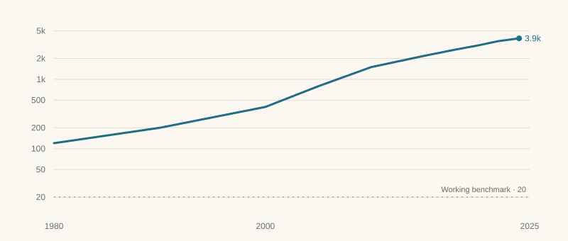
Yangtze freight grew far beyond the historical Suez comparison. Port throughput and passage through a canal count cargo differently.Underlying observations
Year
Main stem, Yibin to the sea
1980
120
1990
200
2000
400
2005
795
2010
1,500
2015
2,180
2018
2,690
2020
3,060
2022
3,550
2024
3,900
Yellow River sediment: less silt reaching the lower river
Sun called for engineering works and reforestation to prevent Yellow River floods. He described them as the two halves of the task. He did not set a target of cutting sediment by fifty percent.[17]
A useful test of progress is whether sediment reaching the lower river has fallen substantially. We use half the historical Tongguan load as a working benchmark: 0.8 billion tonnes a year, against an estimated 1.6 billion in 1919–49. The halving is our chosen test, not a promise by Sun.
The 2020–24 period estimate is about 0.2 billion tonnes a year, roughly one-eighth of the early level and well below the halving benchmark. The sediment load has fallen dramatically. That supports one part of Sun's flood-control ambition, but sediment reduction alone does not establish flood safety or ecological improvement: reservoirs trap silt, and downstream habitats also depend on it.
Figure 09
Yellow River sediment load at Tongguan
gigatonnes a year, decadal average
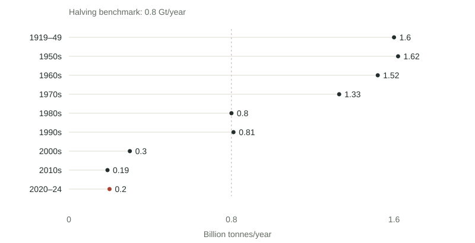
Sediment load fell from an estimated 1.6 billion tonnes a year in 1919–49 to 0.2 billion in 2020–24. The halving test is an additional benchmark; Sun gave no numerical sediment target.Underlying period estimates
Period
Gt/year
1919–49
1.6
1950s
1.62
1960s
1.52
1970s
1.33
1980s
0.8
1990s
0.81
2000s
0.3
2010s
0.19
2020–24
0.2
Forests: replanting the watersheds
Sun wanted reforestation to stabilize watersheds and reduce erosion. He gave no national forest-cover percentage. A national forest measure also covers much more land than the Yellow River watershed he discussed.[17]
To put a visible line on the chart, we use 20 percent forest cover, a later Chinese policy benchmark. This is an additional test of national greening, rather than a numerical commitment found in Sun's book.
Reported national forest cover reached 25.09 percent by 2025—about a quarter of the country and above the working benchmark. China has substantially expanded forest cover. That national result does not by itself show how completely Sun's particular watershed restoration was achieved.[44]
Figure 10
Forest cover
percent of land area, national inventories · log scale
China
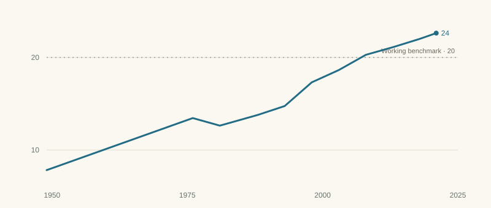
National forest cover rose above the 20% working benchmark. This chart ends in 2021; the text gives the newer official 2025 result.Underlying observations
Year
China
1949
8.6
1976
12.7
1981
12
1988
13
1993
13.9
1998
16.6
2003
18.2
2008
20.4
2013
21.6
2018
23
2021
24
River works also had costs that capacity figures cannot settle. In May 2011, the State Council acknowledged outstanding resettlement, ecological, geological-hazard and downstream problems at Three Gorges. Completing a dam and resolving its consequences are separate achievements.[15]
Steel: turning a capital budget into industrial scale
Sun proposed steelworks with capital of 500 million to one billion Mexican dollars, the silver currency used in his estimates. He specified an investment, rather than annual steel output.[17]
At roughly two Mexican dollars per gold US dollar, the budget becomes 250–500 million gold dollars. If building a steelworks cost 60–100 dollars per tonne of annual capacity, that budget would buy approximately 2.5–8.3 million tonnes a year. These are rough historical cost assumptions. We use 7.1 million tonnes, within that range, as the working benchmark for the numerical comparison.
China reached several-million-tonne steel production in the 1950s. By 2024 it produced about one billion tonnes of crude steel, more than one hundred times the upper end of the estimated range. The industrial scale Sun sought has been surpassed by a very large margin. Later output levels also raise questions about demand, spare capacity and environmental cost.[40]
Figure 11
Crude steel output
million tonnes a year · log scale
China
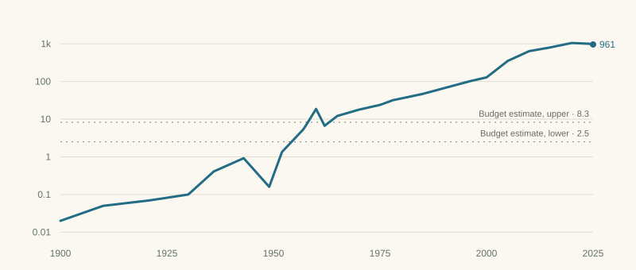
Steel output greatly exceeds the several-million-tonne scale estimated from Sun’s investment budget.Underlying observations
Year
China
1900 ≈
0.02
1910 ≈
0.05
1921 ≈
0.07
1930 ≈
0.1
1936 ≈
0.41
1943 ≈
0.92
1949
0.16
1952
1.35
1957
5.35
1958
8
1960
18.66
1962
6.67
1965
12.2
1970
17.8
1975
23.9
1978
31.8
1985
46.8
1990
66.4
1996
101.2
2000
128.5
2005
353
2010
639
2015
804
2020
1,053
2024
1,005
2025
961
Cement: supplying the building program
Sun proposed cement works with capital of 100–200 million Mexican dollars. Again, this is a budget rather than an annual tonnage promise.[17]
At the same approximate exchange rate, that is 50–100 million gold US dollars. Assuming a plant cost of about 12–18 dollars per tonne of annual capacity gives a working range of roughly 3–8 million tonnes a year. The central calculation uses 4.9 million tonnes.
China passed that production scale in the 1950s and produced about 1.8 billion tonnes of cement in 2024, even after falling from its earlier peak. The capacity to supply construction has grown far beyond the proposed investment's likely scale. Falling recent output reflects a different stage of development from the shortage Sun was trying to overcome.[40]
Figure 12
Cement output
million tonnes a year · log scale
China
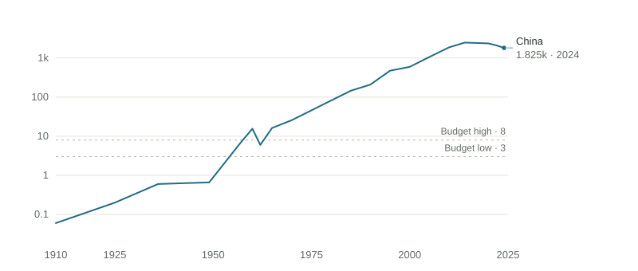
Cement output greatly exceeds the 3–8-million-tonne range estimated from Sun’s investment budget, despite the decline from its later peak.Underlying observations
Year
China
1910 ≈
0.06
1925 ≈
0.2
1936 ≈
0.6
1949
0.66
1957
6.86
1960
15.6
1962
6
1965
16.3
1970
25.8
1978
65.2
1985
146
1990
210
1995
476
2000
597
2005
1,069
2010
1,882
2014
2,492
2020
2,377
2022
2,118
2024
1,825
Chapter 05
Settlement and prosperity
The physical program was meant to move people and enlarge economic life.
Sun expected transport, irrigation and industry to change where people lived and how well they lived. Settlement is the clearest timed commitment: he proposed moving ten million people into the Northwestern territory within ten years. Cotton and income require a different kind of test, because he gave no numerical quota for either.
Northwestern settlement: ten million people in ten years
Sun proposed moving ten million people from crowded provinces into the Northwestern territory over ten years. He also discussed organizing settlement through people released from military service.[17]
The available population comparison follows Han residents of Xinjiang. Adding ten million to an approximate starting population of 300,000 gives a working level of 10.3 million. Xinjiang is narrower than Sun's Northwestern territory, and a resident population includes births and deaths as well as migration. The number therefore tests the eventual scale of settlement, rather than counting ten million arrivals.
Xinjiang's Han population grew from about 290,000 in 1949 to 10.92 million in 2020. That is an increase of roughly 10.6 million over seventy-one years. The eventual population increase reached the proposed scale, but the ten-year settlement promise was not fulfilled. The Bingtuan, formed in 1954, later combined organized settlement with military and agricultural institutions; resemblance in organization does not establish completion of Sun's original program.
Figure 13
Xinjiang population
millions, census years · log scale
TotalHan
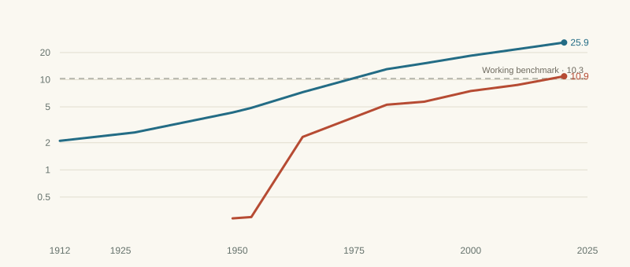
The eventual Han population increase exceeded ten million, over many decades. This does not establish ten million migrants arriving within Sun’s ten-year deadline.Underlying observations
Year
Total
Han
1912 ≈
2.1
—
1928 ≈
2.6
—
1949
4.33
0.29
1953
4.87
0.3
1964
7.27
2.32
1982
13.08
5.28
1990
15.16
5.7
2000
18.46
7.49
2010
21.81
8.75
2020
25.85
10.92
The Northeast: another settlement history
Sun also wanted to develop Manchuria, but the ten-million-in-ten-years figure belongs to his Northwestern proposal. He did not set a target of thirty-three million residents for the Northeast.[17]
For comparison, we add the same ten-million increase to the Northeast's estimated 1920 population of 23 million. That produces a 33-million-person benchmark for Liaoning, Jilin and Heilongjiang. It asks how much another frontier region grew; it is an additional comparison, not a separate promise by Sun.
The region had grown beyond 33 million by the 1940 observation and reached about 98.5 million in 2020, down from about 109.5 million in 2010. Its long-run population growth far exceeded the chosen increment. That outcome cannot be scored as fulfillment of the Northwestern migration deadline, and recent decline shows that frontier population growth is no longer the only relevant question.
The Northeast grew well beyond the additional ten-million-person comparison. Sun’s numerical settlement commitment concerned the Northwest.Underlying observations
Year
Northeast
1900 ≈
14
1908 ≈
17
1920 ≈
23
1931 ≈
30
1940 ≈
43
1953
41.7
1964
62.7
1982
91
1990
99.4
2000
104.8
2010
109.5
2020
98.5
Xinjiang cotton: a national-scale crop in one region
Sun's program connected irrigation, settlement and agricultural development. He did not specify a one-million-tonne cotton quota for Xinjiang.[17]
The working benchmark is one million tonnes a year, a rough estimate of China's entire cotton crop around Sun's time. The comparison asks whether Xinjiang alone came to produce a crop on that former national scale.
Xinjiang produced 5.686 million tonnes in 2024, about 5.7 times that benchmark and most of China's 6.164-million-tonne crop. The region became an agricultural producer on a scale far beyond this historical comparison. Production measures the crop; water use, labor conditions and the distribution of benefits require their own evidence.[39]
Figure 15
Xinjiang cotton output
million tonnes a year · log scale
Xinjiang
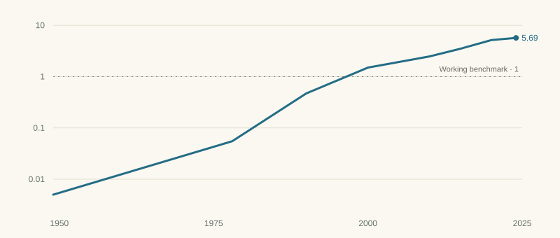
Xinjiang alone produces several times the estimated cotton crop of all China around Sun’s time. He gave no numerical regional cotton quota.Underlying observations
Year
Xinjiang
1949
0.005
1978
0.055
1990
0.47
2000
1.5
2010
2.48
2015
3.5
2020
5.16
2024
5.69
Income: reaching the prosperity of Sun's American comparator
Sun wanted development to raise living standards. He gave no GDP-per-person target. The United States of his time provides a way to put a number on the prosperity he associated with a developed industrial economy.
The working benchmark is estimated US income per person in 1920: 5,552 in 1990 international dollars. These are historical purchasing-power units intended to compare the goods and services people could buy. They are not current US dollars or a figure Sun wrote down.
In the historical income estimates, China reached that level around 2005. The extended series puts 2024 income at about 14,500 in the same units, roughly 2.6 times the benchmark. Average income has exceeded the American level used for Sun's era. This does not mean China had caught up with contemporary American income, or that the gains were evenly shared. The later extension of the historical estimates is explained in the measurement notes.
Figure 16
GDP per person
1990 international dollars (Maddison) · log scale
China
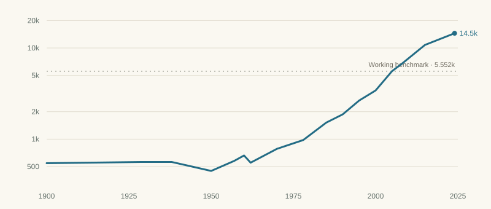
China reached the estimated 1920 American income level around 2005. The benchmark is expressed in historical purchasing-power units and was not a target stated by Sun.Underlying observations
Year
China
1900 ≈
545
1913 ≈
552
1929 ≈
562
1938 ≈
562
1950
448
1957
577
1960
662
1962
552
1970
783
1978
978
1985
1,519
1990
1,871
1995
2,653
2000
3,421
2005
5,575
2008
6,725
2015
1.08e+04
2024
1.45e+04
These comparisons produce different verdicts. The settlement deadline was missed, even though the eventual population increase was large. Cotton and income rose far beyond the working benchmarks, but those benchmarks were chosen to clarify Sun's ambitions. They should never be presented as numerical promises he made.
Chapter 06
Who built the plan?
Continuity in geography, discontinuity in governments, and a different way of paying.
Once a proposal is placed beside a later project, the next question is political: who gets the credit? The answer depends on whether credit means imagining a route, surveying it, financing it, beginning work, completing it or enlarging it to its current scale.
The ledger separates increases in selected measures into three broad periods: before 1949, 1949–76 and after 1976. This is a descriptive allocation of recorded growth to dates. It is not a counterfactual estimate of what each government caused. Earlier surveys can assist later builders, earlier construction can be damaged, and an inherited institution can matter long after its founding.
The institutions between vision and construction
William C. Kirby's institutional history follows Nationalist reconstruction agencies and the National Resources Commission, which began as a defense-planning body in 1932 and was renamed in 1935. Technical research, training and industrial organization gave reconstruction an administrative life beyond Sun's text. This is a mechanism through which projects could survive political changes, rather than proof that every later structure derived from his design.[32]
International cooperation also took forms different from Sun's organization. Margherita Zanasi's published abstract identifies the 1931 League of Nations technical-cooperation agreement and its expansion in 1933. This agreement provided another channel for international technical advice; it does not establish who built individual projects.[28]
Figure 19
Recorded level increments by era
Share of the recorded latest level
Before 19491949–76After 1976
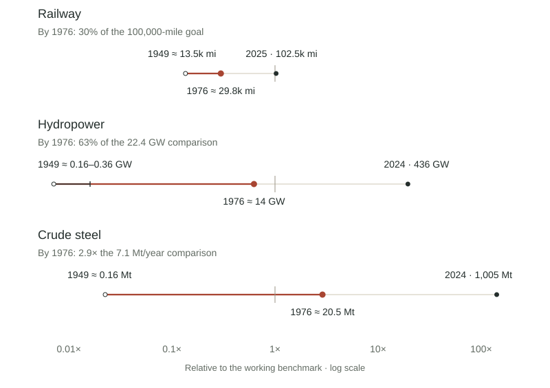
Most of the final scale accumulated after 1976. These shares place recorded increases in time; they do not isolate what each government caused. Endpoints differ by measure.
The distinction between foundations and final scale is especially important. The post-1949 decades developed routes, power works and institutions that became part of the later system. The much larger expansion in industrial output, port handling and income appears mainly in the later part of the record. The same Mao-era steel level can look small beside today's production and substantial beside a target inferred from 1920 plant costs.
War and political upheaval complicate every era boundary. The railway record's nominal totals overstate what was actually operating around 1949. The steel record changes sharply across the 1940s. These observations establish disruption in the record, while exact claims about how many years of development were “lost” require a counterfactual this ledger does not estimate.
An inheritance claimed in different ways
Mao's 1956 commemoration of Sun praises his revolutionary contributions and political legacy; it does not set out the Industrial Plan's engineering program. Xi Jinping's 2016 anniversary speech explicitly recalls the development blueprint and places later construction in the story of its realization. The two texts show how the emphasis of commemoration changes.[9][24]
Neither speech resolves the causal history of each project. The most defensible continuity in this book is the recurrence of geographical and institutional problems: reaching the interior, handling ocean trade, crossing rivers and supplying construction. A complete history of influence would trace personnel, surveys, ministries, financing and design decisions project by project.
The unfulfilled financing entry
Sun's proposed international development organization was central to the scheme. The ledger keeps that financing mechanism as an unfulfilled target even while judging many physical aims built. The later projects were undertaken through changing combinations of state organization, domestic resources and external assistance and investment, rather than through the consortium structure the book proposed.
A real four-power banking consortium existed at the time. Its representatives described their aims in a September 1920 note to China's foreign minister. In March 1921, the American banking group reported no formal Chinese government loan application and described a public-utilities lending role. Sun's conclusion welcomed the new consortium. The distinction is between that banking arrangement and his more extensive development organization; international banking cooperation did exist.[1][7][17]
This is a substantive divergence. It means that “the plan was realized” combines several claims whose truth can differ. The physical scale may arrive; the deadline may be missed; the location may be approximate; the financial bargain may never occur. A useful ledger can keep all four facts in view.
Chapter 07
Two countries, one index
A composite can organize the evidence. Its meaning depends on the question and the basket.
Sixteen histories are difficult to hold in mind at once. The composite turns each into a standardized path and averages them. It is an aid to comparison, whose simplicity comes from explicit choices about transformations, dates, targets and weights.
The calculation first interpolates positive values onto annual years in logarithmic space. It then standardizes the logs, reverses the sediment measure so that lower values score higher, and caps each z-score between −3 and +3. Every measure remains in the average from 1875 through 2025. Before recorded coverage the existing convention assigns a −3 floor; after the last observed year it carries the last score forward.
Interpolated years within a series' observation span contribute to its mean and standard deviation. The floor and carried-forward years do not. This matters because a sparse early estimate can influence a long interval. In a port aggregate, all components must remain covered: the sum stops at their last common endpoint and is then carried forward as a whole.
Position within one's own history
Figure 17
Own histories
Composite z · 1875–2025 · sixteen measures
ChinaUnited States
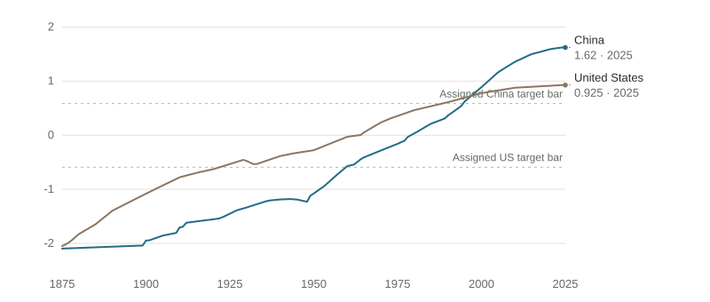
Own-distribution scores compare each country with its own history. The two lines do not measure absolute national scale.
In the own-distribution version, China is scored against its Chinese history and the United States against its American history. China's composite reaches the average of the sixteen working benchmarks in 1995 and ends at about +1.62. The American composite crosses its own target bar in 1922 and ends near +0.93.
Those endpoints reflect historical shape. A series that grew rapidly late in the window ends far above its own average. A series that peaked much earlier can finish near or below its historical mean. Consequently, one country scoring higher on this relative scale does not establish that its infrastructure or income level is larger.
A shared scale for the paired measures
Figure 18
A shared scale, a selected basket
Composite z · 1875–2025 · sixteen measures
ChinaUnited States
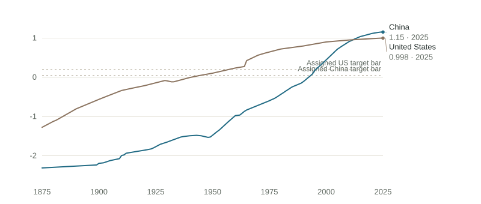
Pooled scores use a shared distribution per measure. The full-basket result depends on unharmonized definitions and measure selection; removing all three port measures produces no crossing through 2025.
The pooled version instead uses a shared mean and standard deviation for each Chinese–American pair. With all sixteen measures, China's composite first reaches the American one after 1950 in 2012. The 2025 scores are about 1.15 and 1.00. Pooling makes the numerical scale common. It leaves port boundaries, road surfaces, population definitions and freight counting to be resolved separately.
Assumption check
How the selected basket changes the answer
Scenario
Measures
China / Sun, own
China / US, pooled*
2025 gap
All sixteen (baseline)
16
1995
2012
+0.155
Without imputed targets
10
1977
2009
+0.203
Text-tagged targets only (includes 1924 hydro)
6
1991
Not reached
-0.293
Without the three port measures
13
1991
Not reached
-0.003
Rail, steel, cement and hydro only
4
1979
2002
+0.525
Without Chinese PRE backfill estimates
16
1993
2012
+0.168
Steel/cement targets at lower bounds
16
1995
2012
+0.155
Steel/cement targets at upper bounds
16
1995
2012
+0.155
* First year at or above the US after 1950. A positive gap puts China above the US within that basket. “Not reached” means through 2025. Subsets remove measures from both countries and their target bars; these are scenarios, rather than confidence intervals.
Removing the six imputed targets also removes those measures from both the line and the bar. China's own target crossing moves from 1995 to 1977. The pooled China–US first-at-or-above year moves to 2009. Keeping only the six text-tagged measures, including the later hydro figure and adapted population targets, yields no pooled crossing through 2025.
A narrower basket of rail, steel, cement and hydro reaches the US in 2002. It emphasizes national physical measures and asks a different question. Removing each of the sixteen measures individually produces dates between 2009 and 2016. That is a useful deletion test, but the joint removal of ports shows why individual deletions cannot establish robustness to every plausible basket.
These spans are scenario results, not confidence intervals. They quantify the consequence of specified choices. They do not quantify all errors in estimated anchors, historical definitions or omitted social outcomes. The index is most useful when its assumptions remain available to the reader.
Chapter 08
What the ledger can say
Physical resemblance is strong evidence of scale, and a starting point for further history.
China has achieved much of the physical scale Sun imagined. His 100,000-mile railway target was reached in 2024. The road network is several times the length he proposed, although its changing definitions prevent an exact verdict on his macadam specification. Modern ports, power generation, steel and cement operate on scales far beyond the comparisons available to him.
Those successes do not add up to literal execution of the whole plan. Northern port construction had an early Republican revival and interruption, followed decades later by modern projects. The eastern gateway grew at sites different from the harbor Sun specified. Three Gorges followed generations of engineering work and new financing and political decisions.
Some proposals also failed on their own terms. The ten-year Northwestern settlement deadline was missed. Yellow River navigation to Lanzhou was not achieved. Sun's integrated international development organization did not become the mechanism that built the later infrastructure, despite the existence of a more limited international banking consortium.
Scale, timing and the means of building
The eighteen-item scorecard records twelve broad physical achievements, four partial results and two unfulfilled proposals. These judgments ask different questions: whether the capacity exists, whether the specified place was developed, whether the deadline was met, and whether the proposed financing took place. A large modern port can satisfy the first test while failing to match the original site or design.
Where Sun gave a number, the comparison can test it directly. Where he gave a budget or named a model such as New York, a calculation makes the intended scale more concrete. Where he gave only a direction—more forests or greater prosperity—the numerical benchmark belongs to the present analysis. Keeping those three cases clear is essential to judging his record fairly.
Most of the final industrial, port and income scale accumulated after 1976. Earlier generations supplied routes, surveys, institutions and initial works, sometimes across changes of government. Recognizing the later expansion does not require treating the preceding decades as an empty interval.
What fulfillment can tell us
Physical construction answers whether a country acquired the means to move goods, generate power and supply industry. It cannot alone answer whether gains were distributed fairly, whether resettlement was just, or whether ecological costs were acceptable. Those questions remain part of the history even when a capacity target is exceeded.
Sun's achievement was to describe national development as a connected problem: ports needed railways, railways needed industry, and settlement needed transport and water. China's later landscape makes that vision recognizable. Its actual construction was a century-long history of interrupted plans, changed designs and different institutions. The comparison is strongest when it tells both stories: what he proposed, and how the country eventually measured up.
Appendix A
The full scorecard
Eighteen editorial judgments, including qualifications and proposed horizons.
“Built” means that the broad physical capacity exists. Each entry also states where the site, design, deadline or financing differs from Sun's proposal. The eighteen judgments therefore distinguish a comparable achievement from literal execution of every detail.
Built
100,000 miles of railway (p. 6)
China reached the proposed 100,000 miles of operating railway in 2024. The network reached 165,000 km, about 102,500 miles, in 2025.
Horizon / qualification: The 1921 development text gives no railway completion deadline.
Partial
1,000,000 miles of road (p. 6)
The 2024 road network was more than three times the proposed length. Changing census coverage and the macadam surface requirement prevent a precise completion date.
Horizon / qualification: The one-million-mile length also specifies macadam roads.
Built · regional capacity
Great Northern Port on the Qinghe–Luanhe cape (pp. 13–17)
Jingtang opened in 1992 and Caofeidian’s ore terminal in 2005. Together with Tianjin, today’s northern ports handle far more cargo than the historical New York comparison.
Horizon / qualification: a city as large as Philadelphia within 40 years (1961); as large as New York in a reasonable time (p. 16)
Historical qualification. The built label records later regional port capacity. Republican revival in 1928 and interruption in 1932 are documented; uninterrupted transfer of Sun-era designs into Jingtang/Caofeidian is unproved.[27][19]
Built · regional capacity
Great Eastern Port in Hangzhou Bay (pp. 31–35)
Yangshan’s first phase opened in 2005. Shanghai and Ningbo-Zhoushan together handle far more containers than the working benchmark for the eastern gateway.
Horizon / qualification: land values up 10- to 1,000-fold within 10 years; a city equal to New York (pp. 34–35)
Historical qualification. Sun specified a mainland enclosure between Chapu and Kanpu; Yangshan is an offshore-island solution. Regional deep-water capacity was built, while the specified site and design differ.[17][13]
Built
Canton as a world port beside Hong Kong (pp. 78–82)
Shenzhen and Guangzhou together handled about 59 million TEU in 2024, far above the working benchmark for a southern gateway.
Built
Dam the Yangtze gorges for power and locks (p. 74)
Three Gorges reached 22.5 GW in 2012. That is comparable to the conversion of Sun’s 1924 regional power estimate; national hydropower is much larger.
Horizon / qualification: The 1924 figure concerns regional potential, rather than an exact specification for one dam.
Historical qualification. The 1924 lecture describes more than thirty million horsepower of regional potential. The ledger’s 22.4 GW is a rounded comparator; 2012 refers to the final major generating unit, rather than fulfillment of an exact single-dam specification.[18][5]
Partial
Ocean-going ships 630 miles inland to Hankou (pp. 39–56)
12.5 m channel to Nanjing (2018); Wuhan takes river-sea vessels, not liners
Horizon / qualification: $300 M Mex for the whole river; 450 sq mi of estuary reclaimed within 20 years (1941)
Built
Yellow River: flood-proof dikes, reforest the loess (pp. 26–27)
Sediment reaching Tongguan fell sharply, alongside major river-engineering and watershed works. This is progress toward flood control; sediment alone does not prove flood safety.
Unfulfilled
Yellow River navigable to Lanzhou (p. 26)
Never; the lower river ran dry most years 1972–99
Built
Huai outlets to the sea and the Yangtze (pp. 67–69)
Harness-the-Huai 1950–53, on the Jameson alignment Sun endorsed
Partial
Grand Canal rebuilt end to end (p. 27)
South half a freight artery; north half re-watered 2022, no shipping
Partial
Move 10 million people to the Northwest in ten years (p. 24)
Xinjiang’s Han population increased by about 10.6 million between 1949 and 2020. That eventual scale does not fulfill the ten-year migration promise.
Horizon / qualification: 10 years (1931)
Built
Iron and steel works in Shanxi–Hebei, $0.5–1 B Mex (p. 29)
Sun gave an investment budget. Even allowing for uncertainty in its conversion into annual capacity, China’s roughly one billion tonnes of crude steel in 2024 vastly exceeds the envisaged scale.
Horizon / qualification: No deadline; the annual tonnage comparison is an approximate translation of a capital budget.
Built
Cement works along the Yangtze, $100–200 M Mex (p. 75)
Sun’s investment budget translates approximately into 3–8 million tonnes of annual capacity. China produced about 1.8 billion tonnes of cement in 2024.
Horizon / qualification: No deadline; the annual tonnage comparison is an approximate translation of a capital budget.
Built
Nanjing–Pukou and Wuhan river crossings (pp. 60, 66)
Wuhan bridge 1957, Nanjing 1968; through trains Beijing–Shanghai
Built
Reforest North and Central China (pp. 8, 27)
Reported national forest cover reached 25.09% by 2025. Sun supplied no national percentage, and this figure alone cannot establish restoration of each proposed watershed.
Built
Telegraph, telephone and wireless across the country (p. 7)
1.8 billion mobile subscriptions
Unfulfilled
Financed by an international consortium, foreign-managed until repaid (pp. 9–12)
Later construction used changing combinations of state organization, domestic resources and foreign assistance and investment. Sun’s integrated international development organization did not become its operating mechanism.
Historical qualification. A four-power banking consortium did exist. This unfulfilled entry concerns Sun’s more extensive organizational mechanism.[1][7]
Appendix B
Methods and measures
The choices behind the lines.
Each baseline composite averages sixteen equally weighted measures across a common 151-year calendar, 1875–2025. Quantities are interpolated log-linearly between positive observations. The standard deviation is the population standard deviation of annual log values within observed coverage. Lower sediment is sign-reversed; individual z-scores and target z-scores are winsorized at ±3.
The −3 floor represents both true nonexistence and some unknown early coverage. Those are different historical conditions. The existing rule is preserved to keep a constant basket, and its influence is explored in the early-backfill scenario. After the final observed year, the last score is carried to 2025. These support years are excluded from the standardization statistics.
Own-distribution scores use separate country histories. Pooled scores use the union of both countries' annual log observations for each pair. The assigned target is standardized using the same distribution as its series. Relative population proxies and imputed river-halving targets use separate country baselines, which is why pooled target bars can differ.
“Crossed” below means the first annual value meeting the assigned threshold, including interpolated years. Where the first available observation already meets it, the date is a bound on the available record. It is not proof that the threshold was first reached in that year.
Measure
China target
US target
Provenance
China meets
US meets
Railway, mi
100k
100k
text
2024
1882
Roads, mi
1M
1M
text
2002
1936
Bohai ports, Mt
45
45
inferred
1995
1921
Yangtze delta, M TEU
4.5
4.5
imputed
1999
1993
Pearl River (SZ+GZ), M TEU
4.5
4.5
imputed
2000
2008
Crude steel, Mt
7.1
7.1
inferred
1958
1896
Cement, Mt
4.9
4.9
inferred
1956
1906
Yangtze freight, Mt
20
20
inferred
1957
1875
Hydropower, GW
22.4
22.4
text; 1924 regional proxy
1983
1954
Yellow River silt, Gt (lower is better)
0.8
0.2
imputed
1985
1980
Forest cover, %
20
20
imputed
2008
1870
Xinjiang Han, M
10.3
19.2
text
2018
1949
Xinjiang cotton, Mt
1
1
imputed
1997
1872
Northeast population, M
33
43.3
text
1934
1943
Tianjin population, M
5.62
5.62
text
1962
1959
GDP per person, 1990 $
5.552k
5.552k
imputed
2005
1920
The full data download contains raw chart anchors, composite inputs, yearly composites, per-series results and the sensitivity outputs. The original interactive ledger preserves its scale and comparison controls.
What the historical documents establish, and which links remain open.
This edition distinguishes contemporary documents, later institutional recollections, scholarly interpretations and archival leads. Numbered references link each historical passage to an annotated entry below. The entry states whether the relevant full text, a published extract, or only a bibliographic record was consulted. Earlier documents known through a scholar's citation remain explicitly indirect.
Railways: a longer inheritance
The 1912 interview establishes Sun's planning vision before the book. Official Chengdu–Chongqing histories document a late-Qing antecedent, Republican preparation and PRC construction. The unclosed link is the exact transfer of surveys, structures and personnel into the 1950 work.[16][3][10]
Edmonds's 1987 extract and Lippit's 1966 extract identify a historiographical argument about overlapping plans. The eighty-percent correspondence is cited through that literature; the original route classifications and denominator were not independently checked. Chang's 1943 book is listed as a primary-source retrieval lead.[29][31][52]
Ports: reception, interruption and different sites
Li supplies evidence of Republican reception of Sun's Northern Port and identifies the 1929 preliminary plan and 1932 stoppage report. Those originals have not been read here. Modern company and government records establish another project cycle. The old survey-to-modern-design bridge remains unverified.[27][53][54]
For the Eastern Port, the textual locator is decisive: Sun's Chapu–Kanpu mainland enclosure differs from Yangshan's offshore-island layout. The scorecard's built label records later regional capacity, with this site/design qualification attached. It does not establish literal execution of Sun's specific harbor.[17][13]
Three Gorges: technical cooperation and changing finance
Contemporary 1944–45 correspondence establishes design discussions and financial resistance. A Tsinghua retrospective identifies a named professional bridge through Zhang Guangdou. The preserved-records claim is attributed to that biography; the present dam's adoption of particular wartime drawings remains unproved.[23][8][20]
NARA identifies a surviving Bureau of Reclamation collection, much of it undigitized. Its descriptive page refers to withdrawal of US support in 1949; a project chronology dates design suspension to 1947. These may describe different institutional events and should not be silently collapsed. The underlying contracts, plans and suspension records are the next archive targets.[21][4]
The statistical source trail
The historical research strengthens project lineages without certifying every data point. Chinese series remain attributed to NBS yearbooks, transport and energy releases, port authorities, river records, forest inventories, censuses and Maddison-based income estimates. US series remain attributed to ICC/AAR/BTS, FHWA, USGS, EIA/FPC, USACE, port authorities, Census and Maddison. Exact point-level tables are still missing for many anchors. Definition-check references in the bibliography establish their stated categories; they do not validate an entire time series.
Early observations include estimates. Annual paths between anchors are interpolated, while uncovered years take the stated support convention. The numerical baseline and original interactive ledger remain v009. The book's new source notes qualify their historical interpretations.
Working benchmarks and statistical coverage
The railway endpoints are verified against official transport statistics: 162,000 kilometers in 2024 and 165,000 in 2025. Historical mile values in the charts use a rounded conversion; the narrative uses 1.609344 kilometers per mile. The road series requires reconciliation with the official end-2000 census and the 2005 coverage change. Its calculated 2002 crossing is not a reliable completion date for Sun's macadam-road proposal. The American road comparator counts surfaced roads.[37][43][49]
The port comparison starts with a rough 45-million-tonne estimate for New York around 1921. Its exact historical table and the tonne/short-ton conversion need verification. Dividing by an assumed ten tonnes per TEU yields the 4.5-million-TEU eastern and southern benchmarks. Modern regional sums are Tangshan plus Tianjin, Shanghai plus Ningbo-Zhoushan, and Shenzhen plus Guangzhou. The first uses common observations through 2024; Hong Kong is displayed separately. The official 2024 table records Tangshan 862.16 Mt and Tianjin 579.31 Mt, versus rounded chart values of 862 and 583 Mt; it records Guangzhou 26.07 M TEU, versus 25.4 in the fixed chart. The narrative uses rounded totals consistent with the official table: about 1.4 billion tonnes in the north and 59 million TEU in the south. These small endpoint discrepancies do not alter the scale verdicts; they remain to be reconciled in the numerical baseline.[36] The American comparator follows a changing largest individual port. These geographic and unit choices limit precise cross-country ratios.[46][45]
The steel translation is especially approximate. At two Mexican dollars per gold US dollar, Sun's capital sum becomes 250–500 million gold dollars. Assumed steel plant costs of 60–100 dollars per annual tonne span about 2.5–8.3 million tonnes of capacity. The earlier 5–10-million-tonne illustrative band does not follow directly from that arithmetic, so the book corrects its displayed range. The composite retains the 7.1-million-tonne comparison, which lies within the corrected range; it is an order-of-magnitude benchmark, not the midpoint of that range. Cement's 50–100-million-dollar budget at 12–18 dollars per annual tonne gives about 2.8–8.3 million tonnes, rounded to 3–8 million; 4.9 million is the rounded geometric midpoint of that displayed band.
National hydropower includes conventional generation and pumped storage, whereas Sun's 1924 regional estimate concerned river power. The 2024 national total is about 436 gigawatts, including about 59 gigawatts of pumped storage. The Chinese and American historical capacity scopes still need consistent documentation. Yangtze cargo carried, port throughput and passage through locks are different counting concepts: the chart's 3.9-billion-tonne endpoint and the official 4.02-billion-tonne expected 2024 port total should not be treated as identical observations.[42][48][41]
The sediment observations are period estimates, and the halving test is an editorial choice. The forest chart ends in 2021; the prose additionally reports the official 2025 forest-cover figure. That new observation is not inserted into the historical composite. Cotton's 2024 endpoint is checked against the NBS provincial production table. The Xinjiang and Northeast population measures are stocks, not migration flows. Tianjin municipality is a changing administrative area, not a direct census of Sun's proposed new port city.[44][39]
The income measure uses a Maddison-based historical series in 1990 international dollars, with a later growth extension. A common Maddison vintage and a fully documented extension remain necessary before placing confidence in a precise crossing year or latest income ratio. The selected 1920 US benchmark is an editorial interpretation of prosperity, not Sun's own numerical target.
The calculation baseline remains v009 so the prose revision does not silently change the published index. That baseline corrected missing final port observations previously treated as zero and preserved observed values exactly during interpolation. These numerical corrections are distinct from the source and definition questions above.
Edition and correction note
Digital edition v012, 5 November 2026, rewrites every indicator around Sun's proposal, its numerical translation and China's result. It builds on the historical references added in v011 and the first digital edition published on 29 October. It corrects three over-simple equivalences: route overlap is not a measured causal share; Yangshan is a regional parallel at a different specified site; and the 1924 horsepower passage describes regional potential, not a precise specification for the present dam. It also distinguishes a real four-power banking consortium from Sun's broader organizational proposal.
Original quotations and maps are credited to Sun's public-domain text. Modern historical scholarship is paraphrased with attribution. Abstract-only and metadata-only items are marked; archival leads are retained for follow-up rather than represented as original documents already inspected.
Appendix D
Bibliography and references
Primary texts, historical scholarship, statistical definitions and identified archival leads.
References include publication details, stable links or DOIs, locators, access notes and a statement of what each source supports. Further reading and uninspected archival leads are separated from consulted evidence. English translations of Chinese titles are descriptive; dates refer to the document or publication rather than a later website migration.
[1] American, British, French and Japanese representatives in China. 1920. “Joint note to the Chinese Minister of Foreign Affairs, W. W. Yen, 28 September 1920.” Papers Relating to the Foreign Relations of the United States, 1920, vol. I, document 561, enclosure 2.
[2] Chinese Peasants and Workers Democratic Party. 2006. “农工民主党为曹妃甸矿石码头建设项目建言纪实 [Account of the party's policy advocacy for the Caofeidian ore-terminal project].” Chinese Peasants and Workers Democratic Party official website, 13 March 2006.
[3] Deng Chaojun [邓朝军]. 2021. “从史志回望成渝双城的交通联接 [Looking back through local histories at transport connections between Chengdu and Chongqing].” Chongqing Local Chronicles Office; author affiliated with Jiulongpo District Local Chronicles Compilation Center.
Locator. Section III, 成渝铁路; page metadata publication date 15 June 2021, 11:31, despite migrated 2023 URL path
Use. Places Chengdu–Chongqing in the late-Qing Sichuan–Hankou railway lineage; records a 1932 preparatory office and Republican surveys, earthworks, roadbeds, small bridges and culverts before 1949.
Limit. Retrospective official history, rather than the engineering dossiers. It does not identify exactly which earlier work was reused in 1950.
[4] Embassy of the People's Republic of China in New Zealand. 2003. “Chronology of Three Gorges Project.” PRC Embassy website; posted 27 October 2003, text dateline 5 November 1997.
[5] Feng Guodong and Tian Jianjun, Xinhua. 2012. “Milestones of the Three Gorges Power Station [translated title].” National Energy Administration, 5 July 2012 (Xinhua dispatch 4 July).
[6] General Office of the Beijing Municipal People's Government. 1994. “北京市人民政府办公厅关于北京市与唐山市联合建设京唐港的通知 [Notice on Beijing and Tangshan jointly building Jingtang Port].” Beijing Municipal Government, 京政办发〔1994〕31号, 19 April 1994.
[7] J. P. Morgan & Co., for the American Group. 1921. “The American Group to the Secretary of State, 10 March 1921.” Papers Relating to the Foreign Relations of the United States, 1921, vol. I, document 311, pp. 358–360.
[8] Joseph C. Grew, Acting Secretary of State. 1945. “The Acting Secretary of State to the Ambassador in China (Hurley), 11 July 1945.” Foreign Relations of the United States, Diplomatic Papers, 1945, The Far East, China, vol. VII, document 1088.
[9] Mao Zedong. 1956. “In Commemoration of Dr. Sun Yat-sen.” 12 November 1956; Selected Works of Mao Tse-tung, vol. V; Marxists Internet Archive transcription.
[10] National Railway Administration (reposting China.org.cn). 2017. “重温老成渝铁路历史记忆 [Revisiting memories of the old Chengdu–Chongqing railway].” National Railway Administration, 8 May 2017.
[11] Patrick J. Hurley. 1945. “The Ambassador in China (Hurley) to the Secretary of State, 26 January 1945.” Foreign Relations of the United States, Diplomatic Papers, 1945, The Far East, China, vol. VII, document 1080.
[12] Ren Qinghai; Li Quanxing; Wang Xingye [任庆海；李权兴；王兴业]. 2014. “孙中山两次到唐山与北方大港建设 [Sun Yat-sen's two visits to Tangshan and construction of the Great Northern Port].” People's Political Consultative Daily, republished on People's Daily Party History channel, 13 February 2014.
Locator. Opening description of modern Tangshan port areas and Sun's Wangtan proposal
Use. Retrospective commemorative association between Sun and the Tangshan port complex.
Limit. Search-indexed text inspected; direct page fetch returned 502. Not proof of continuous engineering transmission. Early visit claim is itself discussed as contested in the article.
[13] Shanghai Municipal Government. 2006. “市政府新闻发布会介绍洋山深水港区运转情况以及二期工程建设情况 [Briefing on Yangshan operations and phase-two construction].” Shanghai Municipal Government news briefing, 7 December 2006.
[14] Shanghai Municipal Government; briefing by Liu Zuoliang, deputy commander of the Deep-Water Port Construction Headquarters. 2008. “市政府新闻发布会介绍上海国际航运中心洋山深水港的建设情况 [Briefing on construction of the Yangshan deep-water port].” Shanghai Municipal Government news briefing, 5 December 2008.
Use. Modern container-capacity rationale, island/reclamation layout, and six-year site-assessment process.
Limit. Retrospective official project account. Contains an internally inconsistent phase-one year in one passage; use the separate 2006 briefing for the opening date.
[15] State Council of the People's Republic of China. 2011. “Wen Jiabao Chairs a State Council Executive Meeting to Approve Plans for Three Gorges Follow-up Work and Water Pollution Prevention in the Middle and Lower Yangtze [translated title].” State Council meeting report, 18 May 2011, reproduced by PRC Embassy in Malaysia.
[16] Sun Yat-sen. 1912. “鐵路計畫 [Railway Plans], interview with a Minli bao reporter, Shanghai, 25 June 1912.” Guofu quanji [Collected Works of Sun Yat-sen], vol. 2; National Dr. Sun Yat-sen Memorial Hall, Sunology database.
Locator. Vol. 2, pp. 459–461, particularly p. 460; source note identifies Minli bao, 26 June 1912
Use. Sun already described three national trunk corridors in June 1912, including western and Mongolian frontier routes. Railway thought predates the 1921 preface.
Limit. A printed interview expresses a planning vision; it establishes neither an engineering survey nor later implementation. Historical territorial claims belong to the document.
[18] Sun Yat-sen. 1924. “Three Principles of the People: People's Livelihood, Lecture Three [translated title].” Sunology Database, National Dr. Sun Yat-sen Memorial Hall / Taiwan Ministry of Culture.
Locator. Lecture dated 17 August 1924; paragraph under the second agricultural improvement method (fertilizer), discussing the upper Yangtze gorges and the Yichang-Wanxian stretch
Use. Sun reports potential exceeding thirty million horsepower for the Yichang-Wanxian stretch, linked to electrification and fertilizer.
Limit. Regional potential estimate attributed to investigators; not an exact installed-capacity specification for a single dam.
[19] Tangshan Port Group Co., Ltd.. 2010. “首次公开发行股票招股意向书 [Preliminary prospectus for initial public offering].” Tangshan Port Group company filing, 3 June 2010; full-text reproduction on Sina Finance.
Locator. Printed pp. 1–1–27 to 1–1–28, subsection on assets and business before the issuer's restructuring
Use. Jingtang preparation in November 1984, construction in August 1989, domestic navigation and authority formation in July 1992.
Limit. Company historical disclosure reproduced by a financial-information provider, not proof of Republican survey-file transmission. Original exchange PDF currently unavailable; repaired primary link uses the same preliminary filing on Sina.
[20] Tsinghua University News. 2002. “A Leading Figure of Chinese Hydropower: Brief Biography of Zhang Guangdou, Part I [translated title].” Tsinghua University, 26 April 2002.
Locator. Sections on wartime return and early engineering work; refusal to leave for America or Taiwan; and teaching at Tsinghua after the founding of the PRC
Use. Institutional retrospective describing Zhang's NRC training, wartime planning, retained records and PRC advisory work.
Limit. Commemorative biography; its claims of archival preservation should be attributed and corroborated in original files.
[21] U.S. National Archives at Denver. 1944. “Photograph of Jack Savage on the Yangtze River, 1944.” Record Group 115, Bureau of Reclamation; descriptive page reviewed 27 September 2024.
Locator. National Archives Identifier 431966320; Series 'Case Files on the Yangtze Gorge and Three Gorges Dam, China, 1943-1996'
Use. Photograph and collection description document a Chinese-American survey encounter and surviving project records.
Limit. Most collection records undigitized. Descriptive page dates withdrawal of American support to 1949; other accounts date design suspension to 1947.
[22] Wang Jiazhu and Liu Ning. 2002. “Endless Yangtze Waters, an Enduring Commitment to the Nation: Recollections of Zhang Guangdou's Work on Gezhouba and Three Gorges [translated title].” Tsinghua University, Zhang Guangdou 90th-birthday commemoration.
Locator. Sections I and II; paragraphs concerning 1972 Gezhouba redesign and 1944 Savage cooperation
Use. Recollections by students/colleagues of Zhang's later engineering participation.
Limit. Commemorative account; precise publication year inferred from the 90th-birthday context. Do not treat every retrospective assertion as contemporaneous evidence.
[23] Wong Wen-hao [Weng Wenhao]. 1944. “The Chinese Minister of Economic Affairs (Wong) to the Secretary of State, 15 December 1944.” Foreign Relations of the United States, Diplomatic Papers, 1944, China, vol. VI, document 871.
[24] Xi Jinping. 2016. “Speech at the Conference to Commemorate the 150th Anniversary of the Birth of Dr. Sun Yat-Sen.” 11 November 2016; Xinhua text, CSIS Interpret English translation.
[25] Christopher Sneddon. 2015. “Building a 'World-Wide Fraternity': The Bureau, China, and John Savage.” Concrete Revolution: Large Dams, Cold War Geopolitics, and the US Bureau of Reclamation. University of Chicago Press. DOI: 10.7208/chicago/9780226284453.003.0002.
Locator. Chapter 2, pp. 28-51; publication 25 September 2015
Use. Technical assistance, Savage and foreign-policy oversight as a scholarly research path.
Limit. Only abstract and metadata inspected; no full-chapter claims.
[26] Covell F. Meyskens. 2024. “The Three Gorges Dam and Sino-American Hydraulic Planning.” In Uneasy Allies: Sino-American Relations at the Grassroots, 1937-1949, edited by Zach Fredman and Judd Kinzley. Cambridge University Press. DOI: 10.1017/9781009534970.009.
Locator. Chapter 6, pp. 95-112; online 12 December 2024, print 19 December 2024
Use. Publisher summary identifies scope from Sun's proposal to Sino-American efforts in the 1940s.
Limit. Chapter full text was not accessible; do not use unseen details as evidence.
[27] Kan Li. 2017. “River Conservancy and the Undetermined Future of the Port of Tianjin, 1888–1937.” Open Rivers: Rethinking Water, Place & Community, no. 8 (Fall), pp. 64–86. DOI: 10.24926/2471190X.3484.
Locator. Section 'The Great Northern Port,' pp. 78–80; institutional mission p. 79; preparations, halt and postwar alternatives p. 80; notes 62–64, pp. 85–86. PDF: https://openrivers.lib.umn.edu/wp-content/uploads/2017/11/6_kan_feature_fall17.pdf
Use. Republican reception, interruption and competing port lineages.
Limit. Earlier documents are cited through this scholarly account, not independently checked here.
[28] Margherita Zanasi. 2007. “Exporting Development: The League of Nations and Republican China.” Comparative Studies in Society and History 49, no. 1 (January): 143–169. DOI: 10.1017/S0010417507000436.
[29] Richard Louis Edmonds. 1987. “The Legacy of Sun Yat-sen’s Railway Plans.” The China Quarterly, no. 111 (September 1987), pp. 421–443. DOI: 10.1017/S0305741000050980.
Locator. Public extract (opening paragraph, p. 421); published references 1, 19 and 23
Use. The public extract attributes the 80% correspondence of 1950–58 completed mileage with early-1940s Nationalist projections to Lippit. Reference 1 traces the argument through Chang’s 1943 book.
Limit. Published extract and references only. Overlap is not causation. The article is from 1987; 2009 is digitization. Full author name corroborated by Li (2018).
[30] Si-yi Li [李思逸]. 2018. “民族國家的想像與測繪：孫中山的「鐵路夢」 [Remapping an Imagined Community: On Sun Yat-sen’s Railway Thoughts and Plans].” Journal of the History of Ideas in East Asia, vol. 14 (June 2018), pp. 359–406.
Locator. English abstract at end of article; bibliography for full Edmonds name
Use. Treats railway plans and maps as instruments of territorial/national imagination, broadening the question beyond construction totals.
Limit. Abstract and bibliographic material inspected; full Chinese argument not systematically read. Do not use as evidence of a specific route’s engineering inheritance.
[31] Victor D. Lippit. 1966. “Development of Transportation in Communist China.” The China Quarterly, no. 27 (July–September 1966), pp. 101–119. DOI: 10.1017/S0305741000021718.
Locator. Public extract at p. 101; Edmonds reference 1 points to pp. 101–103 for the inheritance argument
Use. The extract compares Sun’s scheme with Chang Kia-ngau’s 1943 ten-year plan, including the repeated expectation that Western war industries could supply railway construction.
Limit. The full article and its mileage calculation were not inspected. The 80% figure should be attributed through Edmonds rather than represented as recomputed here.
[32] William C. Kirby. 2000. “Engineering China: Birth of the Developmental State, 1928–1937.” In Wen-hsin Yeh, ed., Becoming Chinese: Passages to Modernity and Beyond. Berkeley: University of California Press, pp. 137–160. DOI: 10.1525/9780520924413-007.
[35] Ministry of Communications and National Bureau of Statistics of China. 2002. “第二次全国公路普查公报 [Communiqué of the Second National Road Census].” Joint official communiqué, 6 February 2002; NBS web archive.
Locator. Attached PDF, p. 1: Tangshan, Tianjin, Shanghai, Ningbo-Zhoushan, Shenzhen and Guangzhou rows
Use. Official 2024 cargo and container totals for the three regional port comparisons.
Limit. Regional sums are not individual ports. Small differences from fixed historical chart endpoints are disclosed in Appendix C; no wholesale revision of the composite was made.
[38] National Bureau of Statistics of China. 2010. “China Statistical Yearbook 2010, table 16-2: Length of Transport Routes.” China Statistics Press; online yearbook table.
[40] National Bureau of Statistics, China. 2025. “中华人民共和国2024年国民经济和社会发展统计公报 [Statistical communiqué on national economic and social development in 2024].” Published 28 February 2025.
[41] National Development and Reform Commission of China. 2024. “长江干线港口货物吞吐量首次突破40亿吨 [Main-stem Yangtze port throughput first exceeds four billion tonnes].” Yangtze Economic Belt report, 27 December 2024, reporting the Yangtze navigation authority.
[42] National Energy Administration, China. 2025. “2024年可再生能源并网运行情况 [Renewable-energy grid operation in 2024].” Published 27 January 2025; official web reproduction.
Locator. Third numbered section: railway construction and operating mileage
Use. End-2025 operating railway length of 165,000 km, including 50,000 km of high-speed railway.
Limit. The release text was available through the search index; direct retrieval encountered a redirect loop. Confirms endpoint totals, not execution of each proposed route.
[44] Office of the National Greening Commission, China. 2026. “2025年中国国土绿化状况公报 [Communiqué on China’s land greening in 2025].” National Forestry and Grassland Administration website, 12 March 2026.
[49] US Federal Highway Administration. 2025. “Public Road Length—2024: Miles by Type of Surface and Ownership/Functional System, National Summary.” Highway Statistics 2024, table HM-12, November 2025.
Bibliographic record only; full text not consulted
Locator. Publisher description; book metadata also checked against JSTOR, https://www.jstor.org/stable/j.ctvckq59r
Use. An archival institutional history of Chinese railway operation and administration across political changes.
Limit. Bibliographic record and publisher description verified; the complete book was not read for this edition.
[51] Margherita Zanasi. 2006. “Saving the Nation: Economic Modernity in Republican China.” Chicago: University of Chicago Press. ISBN 9780226978734. DOI: 10.7208/chicago/9780226978741.001.0001.
Bibliographic record only; full text not consulted
Locator. Bibliographic confirmation: P. H. B. Kent’s review in Pacific Affairs 17, no. 3 (September 1944), pp. 344–345. Content lead: pp. 46–47 and 50 as cited by Edmonds.
Use. Verified existence, author, publisher and date of a contemporary Nationalist railway-planning account.
Limit. Book body not consulted. The reference is a primary-source lead; specific content should remain attributed to Lippit/Edmonds until the original pages are read.
[53] Li Shutian [李书田]. 1929. “Beifang dagang zhi chubu jihua 北方大港之初步计划 [Preliminary plan for the Great Northern Port].” Huabei shuili yuekan 华北水利月刊 2, no. 9, pp. 122–23.